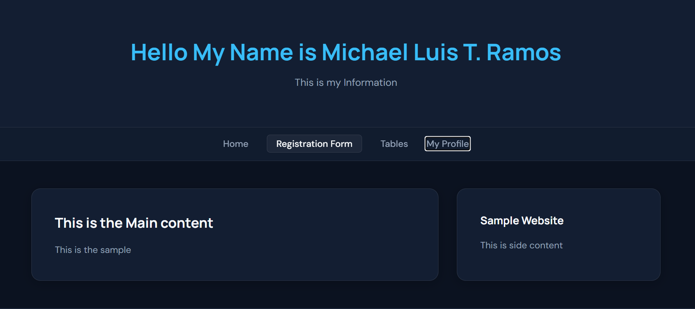
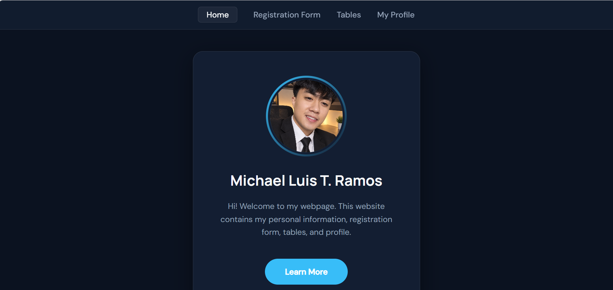
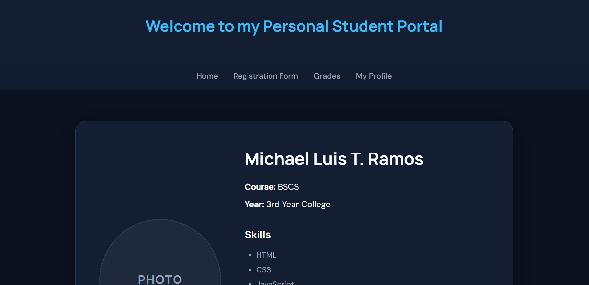
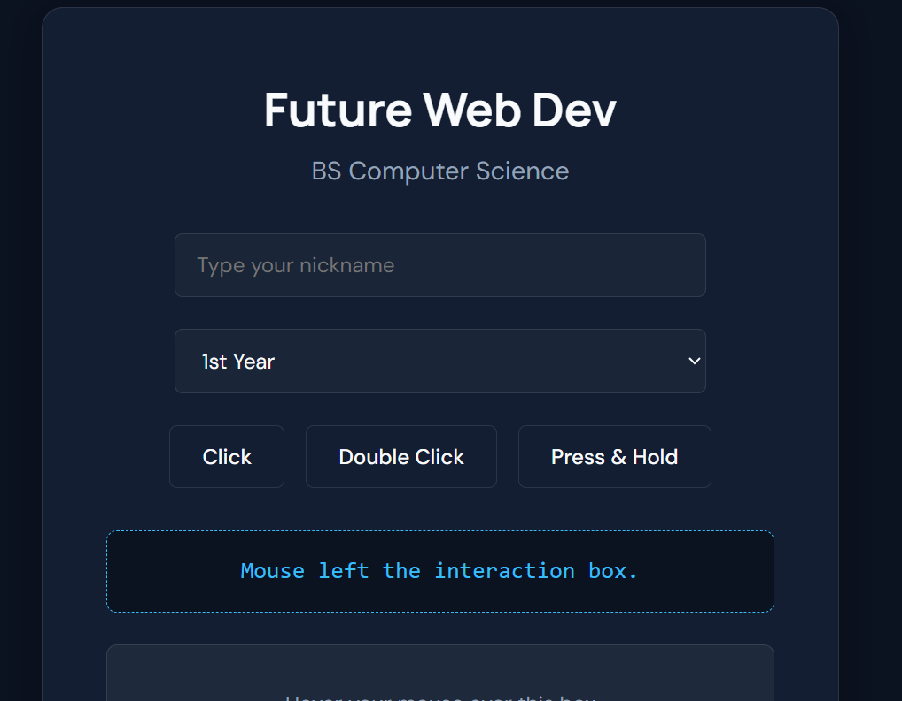
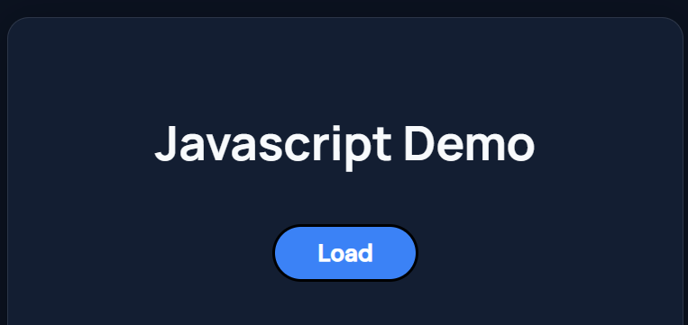
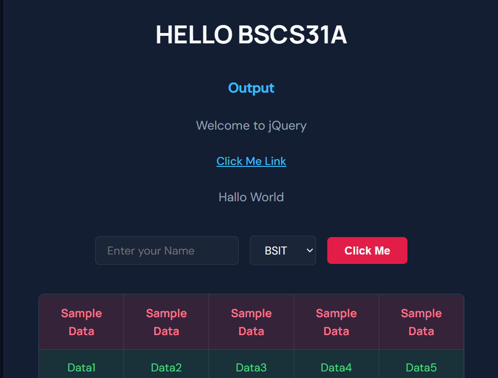

React & Web Dev
Building interactive, component-driven web applications using React, Vite, HTML5, and CSS3.
I’m Michael Luis T. Ramos, a BSCS31A student with a vision to build and scale my own technology company. I combine software engineering with strategic leadership, developing modern web and cross-platform mobile apps designed for business growth.

I am Michael Luis T. Ramos, a BSCS31A student dedicated to mastering both the technical and business sides of the IT industry. My ultimate goal is to transition from a full-stack developer into a tech founder and CEO. I build products that are not just functional, but scalable, organized, and capable of delivering real business value.
This portfolio serves as the blueprint of my journey. Each project and activity represents a deliberate step in improving my system architecture, problem-solving capabilities, and entrepreneurial mindset across various modern frameworks.
Building interactive, component-driven web applications using React, Vite, HTML5, and CSS3.
Creating cross-platform mobile applications with beautiful UIs and seamless Firebase integration.
Developing backend APIs with FastAPI, working with computer vision, and integrating machine learning models.
Designing relational database schemas, handling secure user authentication, and robust data management.
Click any card to open the live deployed application.

Open Live ↗A basic multi-section webpage with navigation, main content, side content, registration, tables, and profile pages.

Open Live ↗A personal information website with a cleaner visual presentation, profile image, navigation, and supporting pages.

Open Live ↗A student-focused website presenting registration, grades, profile information, skills, hobbies, and academic details.

Open Live ↗An interaction-focused exercise using inputs, selections, click, double-click, and press-and-hold events.

Open Live ↗A lightweight JavaScript activity that loads and displays profile, grades, and schedule information dynamically.

Open Live ↗A jQuery practice page combining buttons, inputs, select controls, sample tabular data, and interactive DOM behavior.
Building the foundation for a future tech enterprise requires more than just writing code; it requires guidance and discipline. I want to express my gratitude to my professors, mentors, and peers who have challenged me to think beyond the standard curriculum.
The lessons learned during these web development projects have shaped my understanding of complex systems and software architecture. Thank you for equipping me with the tools, resilience, and industry standards needed to eventually turn ambitious ideas into a successful tech company.